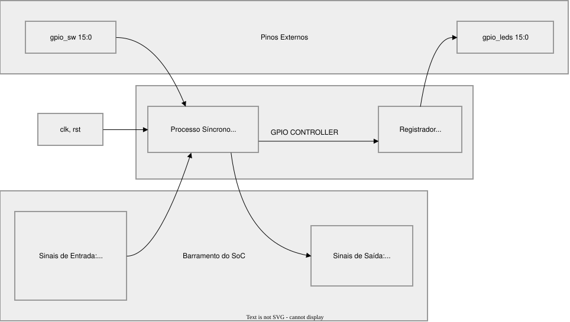
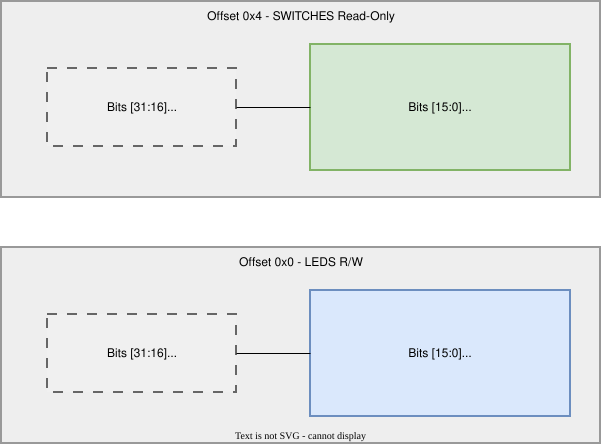
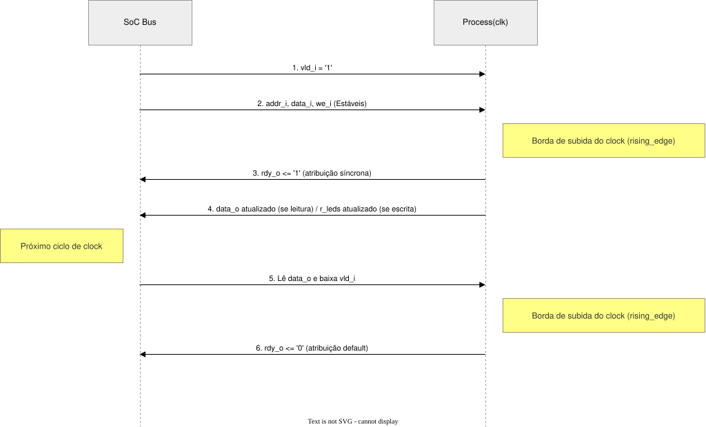

GPIO Controller - Microarquitetura
1. Visão Geral
O GPIO Controller é um periférico de Entrada/Saída de Uso Geral integrado ao barramento do SoC. Este módulo gerencia a comunicação entre o processador RISC-V e dispositivos físicos externos, especificamente:
- 16 pinos de saída conectados a LEDs
- 16 pinos de entrada conectados a chaves (switches)
A arquitetura utiliza um protocolo de handshake para comunicação síncrona com o barramento do sistema, garantindo integridade de dados através de sinais de validade (vld_i) e prontidão (rdy_o).
2. Diagrama de Blocos

3. Mapa de Memória
| Offset | Nome | Direção | Descrição | Acesso |
|---|---|---|---|---|
0x0 |
LEDS |
R/W | Registrador de dados dos LEDs | Leitura/Escrita |
0x4 |
SWITCHES |
R | Registrador de estado das chaves | Somente Leitura |
Detalhamento dos Registradores

4. Arquitetura de Registradores
4.1 Registrador r_leds
Tipo: std_logic_vector(15 downto 0) - registrador interno
Propósito: Armazenar o estado lógico dos 16 pinos de saída conectados aos LEDs
Localização física: Sinal interno no domínio de clock
Comportamento
| Condição | Ação |
|---|---|
rst = '1' |
r_leds <= (others => '0') (reset) |
vld_i = '1' E we_i = '1' E addr_i = 0x0 |
r_leds <= data_i(15 downto 0) |
| Caso contrário | Mantém valor atual (latched) |
Conexão Física
A saída gpio_leds é uma conexão direta (wire) do registrador, atualizando-se imediatamente quando r_leds muda.
4.2 Sinal gpio_sw
Tipo: std_logic_vector(15 downto 0) - porta de entrada
Propósito: Refletir o estado físico das 16 chaves (switches) externas
Características: Não é um registrador; é uma leitura direta do hardware externo
Fluxo de Dados
gpio_sw (pino físico) ──────────────► data_o(15 downto 0) quando addr_i = 0x4
(via multiplexador no processo)
4.3 Interação Direção Dados
Este módulo implementa uma separação fixa de direção:

Nota: Este módulo não possui um registrador de direção (direction register) como em GPIO tradicionais. A direção é fixa: - Bits 15:0 dos LEDs → sempre saída - Bits 15:0 dos Switches → sempre entrada
5. Lógica de Interface
5.1 Sinais do Barramento
| Sinal | Direção | Tipo | Descrição |
|---|---|---|---|
clk |
Input | std_logic |
Clock do sistema (síncrono) |
rst |
Input | std_logic |
Reset síncrono (ativo alto) |
vld_i |
Input | std_logic |
Validade: indica transação válida no barramento |
we_i |
Input | std_logic |
Write Enable: '1'=escrita, '0'=leitura |
addr_i |
Input | slv(3:0) |
Offset do endereço (seleciona registrador) |
data_i |
Input | slv(31:0) |
Dados de entrada (escrita da CPU) |
data_o |
Output | slv(31:0) |
Dados de saída (leitura para CPU) |
rdy_o |
Output | std_logic |
Ready: indica que o periférico respondeu |
5.2 Decodificação de Endereço
addr_i (bits) Seleção
─────────────────────────────────
0000 (0x0) Registrador de LEDs (r_leds)
0100 (0x4) Registrador de Switches (gpio_sw)
outros Nenhuma ação (null)
6. Protocolo de Handshake
6.1 Descrição
O GPIO Controller implementa um protocolo handshake com latência 1 para comunicação com o barramento do SoC:

6.2 Diagrama de Estados do Handshake
6.3 Timing do Handshake
| Ciclo | vld_i |
we_i |
addr_i |
data_i |
rdy_o |
Ação |
|---|---|---|---|---|---|---|
| N | 1 | 0/1 | 0x0/0x4 | valor | 0 | CPU inicia transação |
| N+1 | 0 | - | - | - | 1 | GPIO responde |
| N+2 | - | - | - | - | 0 | Idle novamente |
7. Tabela de Operações Completa
vld_i |
we_i |
addr_i |
data_i |
data_o |
rdy_o |
Ação |
|---|---|---|---|---|---|---|
| 0 | X | X | X | (zera) | 0 | Nenhuma operação |
| 1 | 1 | 0x0 | xxxx_xxxx |
(zera) | 1 | Escrita em r_leds |
| 1 | 1 | 0x4 | X | (zera) | 1 | Escrita ignorada (endereço read-only) |
| 1 | 1 | Outro | X | (zera) | 1 | Escrita ignorada (endereço inválido) |
| 1 | 0 | 0x0 | X | r_leds |
1 | Leitura de LEDs |
| 1 | 0 | 0x4 | X | gpio_sw |
1 | Leitura de Switches |
| 1 | 0 | Outro | X | (zera) | 1 | Leitura inválida (retorna 0) |
8. Considerações de Projeto
8.1 Domínio de Clock
- Síncrono: Todos os registradores operam na borda de subida do
clk - Reset: Síncrono, ativo alto, zera
r_ledspara0x0000
8.2 Latência
- Latência de resposta: 1 ciclo de clock
- A CPU deve aguardar
rdy_o = '1'antes de considerar a transação completa
8.3 Largura de Dados
- Barramento: 32 bits (
data_i,data_o) - Dados úteis: 16 bits (LSB)
- Bits superiores (31:16): Reservados, retornam 0 em leituras
8.4 Limitações
- Direção fixa: Não há registrador de direção configurável
- Sem interrupções: O módulo não suporta geração de interrupções
- Sem máscaras individuais: Escrita afeta todos os 16 bits simultaneamente
9. Referências
- RTL Source:
rtl/perips/gpio/gpio_controller.vhd - Testbench:
sim/perips/test_gpio_controller.py - IEEE Std 1076: VHDL Language Reference Manual